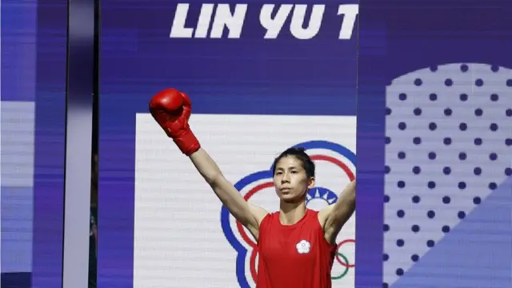
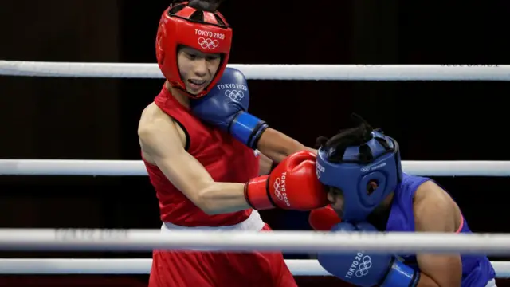
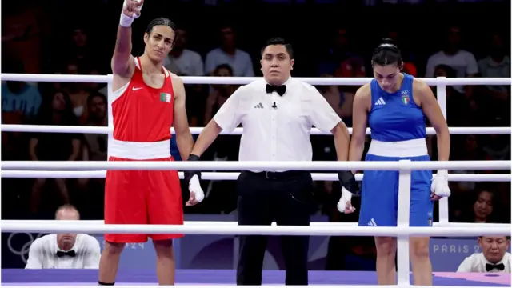
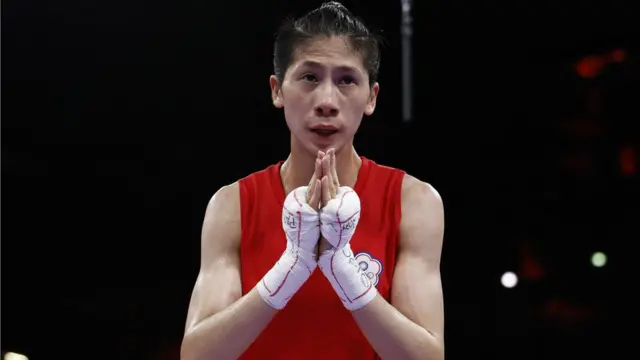
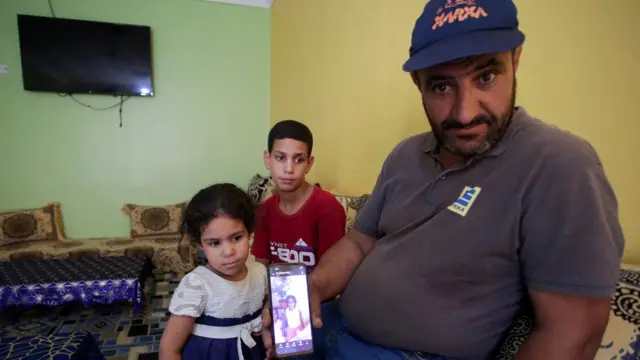

图像来源，PETER CZIBORRA/REUTERS
图像加注文字，中华台北队女拳手林郁婷
在巴黎奥运，女子拳击选手接连陷入性别争议风波，包括阿尔及利亚代表凯莉芙（Imane Khelif）及来自台湾的林郁婷。
她们去年曾遭国际拳击协会（IBA）取消资格，理由是未能通过性别测试，指她们有XY染色体。但国际奥委会（IOC）称，国际拳击协会作出相关决定时，没有任何正当程序。
国际奥委会主席巴赫（Thomas Bach）公開为两名选手辩护，呼吁停止仇恨言论。
“我们有两位拳击手，她们作为女性出生，作为女性成长，拥有女性护照，并作为女性参加了多年的比赛。”他説。“这就是女性的明确定义。她们作为女性的身份从未有过任何疑问。”
赛场上发生什麽？
28岁的台湾（以中华台北队名义参赛）拳击手林郁婷，周四（8月2日）在其首场奥运比赛中胜出。
她在欢呼声中进入赛场，并於女子57公斤级8强赛事赢了乌兹别克选手图尔迪别科娃（Sitora Turdibekova），现场传出一些嘘声。

图像来源，UESLEI MARCELINO/REUTERS
这场赛事打满了三个回合，两人打完短暂握手，但在五名裁判一致判定林郁婷获胜后，她们没有再握手。
图尔迪贝科娃流泪离开赛场，没有停下来接受媒体采访，和她的团队迅速离开赛场。林郁婷则短暂停留，没有回答问题。
台湾媒体引述林郁婷的教练曾自强表示，希望林郁婷不要受外界打扰，不走进采访区，“外国媒体想问相关问题，她不知怎麽回答，有点吓到了”。
此前，阿尔及利亚选手凯莉芙（Imane Khelif）在女子66公斤16强赛事，赢了意大利选手卡里尼（Angela Carini）。

图像来源，YAHYA ARHAB/EPA-EFE
後者在比赛第46秒时宣布弃赛，她拒绝与对手握手，在赛场上跪地落泪，赛後表示“我必须保住自己的生命”。
但卡里尼翌日向对手道歉，称“如果国际奥委会说她可以比赛，我尊重这个决定”。
国际拳协与国际奥委会之争
这次性别风波背後，是国际拳击协会（IBA）与国际奥委会（IOC）之争。
去年3月，有俄罗斯背景的国际拳协在世界锦标赛称林郁婷和凯莉芙“不符合规则”，取消她们的资格。林郁婷的铜牌因此被剥夺。
国际拳协当时称，此举是“为了维护比赛的公平性和最高诚信度”。俄籍主席克里姆列夫（Umar Kremlev）对俄罗斯媒体表示，该会发现有关运动员有XY染色体。
但该判决引发外界质疑，国际拳协进行了“单独且公认的测试”，但一直没有说明是哪种测试，也没有让她们接受睾固酮素检查──睾固酮是男女都有的性激素，而成年男性的睾固酮水平约是成年女性的10到20倍。
到了去年6月，国际拳协因管理不善、贪污等指控，被国际奥委会取消其世界认可地位，奥运拳击赛事改为由国际奥委会自行主持。
不过，国际奥委会上周仍在其网站仍一度引述国际拳协对林郁婷的性别质疑，几天之后才删除相关内容。
上周初，国际奥委会在其媒体信息门户网站上表示，林未能通过“基于生化测试结果的资格要求”。该网站还提到：“这是自国际拳协开始使用新测试方法以来，首次有中华台北运动员被要求进行性别资格的生化测试。”
然而，国际奥委会在几天之后删除了这些信息。
国际奥委会在周四的一份声明中表示，凯莉芙和林成为了“国际拳协突如其来且武断决定的受害者”。
声明指出：“在2023年国际拳协世界锦标赛接近尾声时，他们在没有任何正当程序的情况下突然被取消资格。”
“根据国际拳协网站上的会议记录，这一决定最初是由国际拳协秘书长和行政总裁单独做出的。国际拳协董事会仅在事后才批准了该决定，并随后要求在未来类似情况中制定和反映在国际拳协规章中的程序。记录还指出，国际拳协应该‘建立一个明确的性别测试程序’。
“对这两名运动员的当前攻击完全基于这一武断的决定，这一决定是在没有任何正当程序的情况下做出的，尤其是考虑到这些运动员已经参加高水平比赛多年。
“这种做法违反了良好治理原则。”
国际奥委会是根据运动员护照来定义性别。在争议声中，国际奥委会主席巴赫8月3日为两位拳手辩护，表示从没怀疑两人是女性。
图像来源，CARLOS PEREZ GALLARDO/REUTERS
巴赫说现在看到的是，有些人想要拥有女性的定义。“我只能请他们提出一个基于科学、新的女性定义。为什么一个出生、成长、参加比赛并拥有女性护照的人不能被视为女性？”
他强调国际奥委会愿意倾听，愿意调查，“但我们不会参与出于政治动机的文化战争”，又指社交媒体上一切“仇恨言论”和政治动机引发的辱骂完全不可接受。
一些台湾媒体去年报道称，林郁婷未通过测试是由于“体重控制和月经周期”药物影响了荷尔蒙水平。
林郁婷是谁？
28岁的林郁婷身高175厘米，至今取得40胜14负，曾三次获得世锦赛奖牌，两次获得亚洲冠军。

图像来源，PETER CZIBORRA/REUTERS
台湾媒体报道，林郁婷1995年出生於新北莺歌，小时候和哥哥一起观看日本知名拳击动漫《第一神拳》，主角幕之内一步本来是性格懦弱、受霸凌的高中生，後来转变成为职业拳王。林郁婷受啓发，从练田径转为练拳击。
而她的教练曾自强曾经透露， 林出身於家暴家庭，她希望保护母亲而学习拳击。
她留短头发、打扮中性，去年被国际拳协剥夺铜牌后曾形容，自己好像岳飞被冠上了莫须有罪名。
“我参与这个协会的比赛那麽多次，光世锦赛就七次，怎麽只有这次说我有问题。不能因为我的长相打扮不同於传统女性的样貌，就这样对我。他们也没有公布检测过程，直接给出一张纸就说结果不符合，这就是违反流程的事。”
凯莉芙是谁？
25岁的凯莉芙身高178厘米，从2018年开始参加比赛，以9胜5负的战绩进入巴黎赛。
她上届在东京首次参加奥运会，在八强赛事中输给爱尔兰选手哈灵顿（Kellie Harrington），当时她并没有被质疑性别。
去年她进入新德里的世锦赛决赛，但开赛前一天被主办方取消资格。

图像来源，RAMZI BOUDINA/REUTERS
图像加注文字，凯莉芙父亲
这次在巴黎奥运再被质疑性别，凯莉芙的父亲对天空新闻表示：“我的孩子是个女孩。”
“她从小就被当作女孩养大。她是一个坚强的女孩。我教育她要勤奋勇敢。她有很强的工作和训练意志。”
他向路透社表示，女儿从六岁起就热爱体育运动，以女儿为荣，并展示凯莉芙的出生证明文件说：“这是我们家的官方文件，1999 年5月2日，伊曼-凯莉芙，女。这里写着，你可以看一下，这份文件不会说谎。”